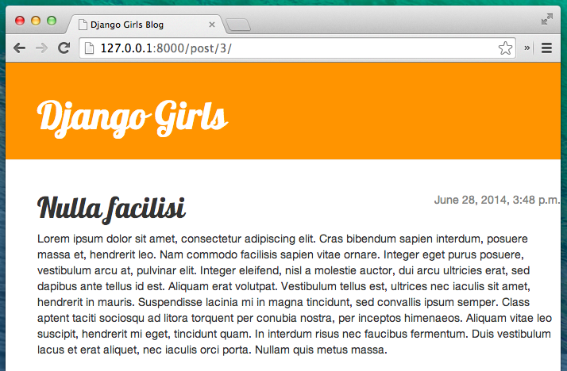

Finaliser votre application
Nous avons déjà franchi toutes les étapes nécessaires à la création de notre site web : nous savons maintenant comment écrire un modèle, une URL, une vue et un template. Nous avons même réussi à rendre notre site web plus joli !
C'est le moment de pratiquer tout ce que vous avez appris aujourd'hui !
Tout d'abord, il faudrait que notre blog possède une page qui permet d'afficher un post, n'est-ce pas ?
Nous avons déjà un modèle Post, nous n'avons donc pas besoin de retourner éditer models.py.
Créer un lien dans un template
Nous allons tout d'abord ajouter un lien à l'intérieur du fichier blog/templates/blog/post_list.html. Pour le moment, ce fichier doit ressembler à ceci :
{% extends 'blog/base.html' %}
{% block content %}
{% for post in posts %}
<div class="post">
<div class="date">
{{ post.published_date }}
</div>
<h1><a href="">{{ post.title }}</a></h1>
<p>{{ post.text|linebreaksbr }}</p>
</div>
{% endfor %}
{% endblock %}
Nous aimerions pouvoir cliquer sur le titre du post et arriver sur une page avec le contenu de celui-ci. Pour cela, changeons <h1><a href="">{{ post.title }}</a></h1> pour qu'il pointe vers la page de contenu du post :
<h1><a href="{% url 'post_detail' pk=post.pk %}">{{ post.title }}</a></h1>
C'est le moment parfait pour expliquer ce mystérieux {% url 'post_detail' pk=post.pk %}. Vous vous souvenez peut-être que la notation {% %} nous permet d'utiliser les balises de template Django. Cette fois, nous allons utiliser des balises qui vont s'occuper de créer des URLs à notre place !
blog.views.post_detail est le chemin d'accès vers la vue post_detail que nous aimerions créer. Attention : blog désigne notre application (le dossier blog) et views le fichier views.py. Enfin, post_detail est le nom de notre vue.
Si nous essayons d'aller à http://127.0.0.1:8000/, nous allons rencontrez une erreur : nous n'avons pas d'URL ou de vue pour post_detail. L'erreur ressemble à ceci :

Créer une URL vers le contenu d'un post
Allons créer notre URL dans le fichier urls.py pour notre vue post_detail!
Nous aimerions que le contenu de notre premier post s'affiche à cette URL : http://127.0.0.1:8000/post/1/
Allons créer une URL dans le fichier blog/urls.py qui pointera Django vers une vue appelée post_detail. Cela nous permettra d'afficher l'intégralité d'un post de blog. Ajoutez la ligne url(r'^post/(?P<pk>[0-9]+)/$', views.post_detail, name='post_detail'), dans le fichier blog/urls.py. Votre fichier devrait maintenant ressembler à ceci :
from django.conf.urls import url
from . import views
urlpatterns = [
url(r'^$', views.post_list, name='post_list'),
url(r'^post/(?P<pk>[0-9]+)/$', views.post_detail, name='post_detail'),
]
^post/(?P<pk>[0-9]+)/$ a l'air plutôt effrayant mais, ne vous inquiétez pas, décortiquons-le ensemble :
- Il commence par
^, qui désigne le "début" post/signifie seulement qu'après le début, l'URL doit contenir le mot post et /. Jusque-là, tout va bien.(?P<pk>[0-9]+): ok, là, on s'accroche :). Cela signifie que Django va prendre tout ce que vous placez là et le transférer à une vue sous la forme d'une variable appeléepk.[0-9]nous dit aussi que nous ne voulons que des nombres (tout ce qui est entre 0 et 9 inclus) et non des lettres.+signifie qu'il faut, au minimum, un chiffre à cet endroit. Du coup, quelque chose commehttp://127.0.0.1:8000/post//n'est pas valide tandis quehttp://127.0.0.1:8000/post/1234567890/l'est complètement!/- nous avons encore besoin d'un /$- "la fin"!
Concrètement, cela signifie que si vous entrez http://127.0.0.1:8000/post/5/ dans votre barre d'adresse, Django va comprendre que vous cherchez à atteindre une vue appelée post_detail et qu'il doit communiquer l'information que pk est égal 5 dans cette vue.
pk est un raccourci pour primary key. Ce nom est très souvent utilisé dans les projets Django. Cependant, vous pouvez appeler cette variable comme bon vous semble, toujours dans la limite des règles suivantes : pas d'accents, pas de caractères spéciaux, des minuscules et des _ à la place des espaces. Par exemple, à la place de (?P<pk>[0-9]+), nous pourrions utiliser la variable post_id, ce qui donnerait : (?P<post_id>[0-9]+).
Comme nous venons d'ajouter un nouveau pattern d'URL au fichier blog/urls.py, rafraîchissons la page : http://127.0.0.1:8000/ Boom ! Encore une erreur ! Mais on s'y attendait ;)

Est-ce que vous vous souvenez de ce que nous devons faire ensuite ? Il falloir ajouter une vue !
Ajouter une vue pour le contenu du post
Cette fois, nous allons donner un paramètre supplémentaire à notre vue : pk. Notre vue va avoir besoin de le récupérer. Pour cela, nous allons définir une fonction : def post_detail(request, pk):. Attention : notez bien que nous utilisons le même nom que celui que nous avons spécifié dans le fichier url (pk). Oublier cette variable est incorrecte et va générer une erreur !
Maintenant, nous n'aimerions obtenir qu'un seul blog post. Pour cela, nous allons utiliser des QuerySets qui ressemblent à ceux-ci:
Post.objects.get(pk=pk)
Cependant, il y a un petit problème dans cette ligne de code. Si aucun de nos Posts ne possède cette primary key (clef primaire) (pk), nous allons nous retrouver avec une super erreur bien cracra!

Dans l'idéal, nous aimerions pouvoir éviter ça! Comme d'habitude, Django nous offre l'outil parfait pour ça : get_object_or_404. Dans le cas où il n'existerait pas de Post avec le pk indiqué, une page d'erreur beaucoup plus sympathique s'affichera : c'est ce qu'on appelle une erreur 404 : page non trouvée.

La bonne nouvelle, c'est que vous pouvez créer vous-mêmes votre page Page non trouvée et en faire ce que vous voulez ! Reconnaissez que ce n'est pas le plus important pour le moment donc nous allons zapper cette partie ;).
Ok, ajoutons notre vue à notre fichier views.py!
Ouvrons le fichier blog/views.py et ajoutons le code suivant:
from django.shortcuts import render, get_object_or_404
Cette ligne est à ajouter en dessous des lignes from situées en début de fichier. Ensuite, à la fin de notre fichier, nous allons ajouter notre vue proprement dite:
def post_detail(request, pk):
post = get_object_or_404(Post, pk=pk)
return render(request, 'blog/post_detail.html', {'post': post})
Hop, réactualisons la page http://127.0.0.1:8000/

C'est bon, ça a marché ! Mais que se passe-t-il lorsque nous cliquons sur un lien dans un titre de blog post ?

Oh non ! Encore une erreur ! Mais cette fois, vous savez quoi faire : nous avons besoin d'un template !
Créer un template pour le contenu du post
Nous allons créer un fichier post_detail.html dans le dossier blog/templates/blog.
Ça ressemblera à ça :
{% extends 'blog/base.html' %}
{% block content %}
<div class="post">
{% if post.published_date %}
<div class="date">
{{ post.published_date }}
</div>
{% endif %}
<h1>{{ post.title }}</h1>
<p>{{ post.text|linebreaksbr }}</p>
</div>
{% endblock %}
Une nouvelle fois, nous faisons hériter de base.html. Dans le content block, nous voulons que s'affiche la date de publication d'un post (si elle existe), son titre et son texte. Mais vous souhaitez peut-être quelques éclaircissements avant, non?
{% if ... %} ... {% endif %} est une balise de template que nous pouvons utiliser si nous voulons vérifier quelque chose : souvenez-vous de if ... else .. de la section Introduction à Python. Dans ce scénario, nous aimerions vérifier si la date de publication d'un post (published_date) n'est pas vide.
Ok, vous pouvez maintenant rafraîchir votre page et voir si la page Page not found a enfin disparu.

Yay ! Ça marche!
Encore un petit effort : déployons !
Nous ferions bien de mettre à jour la version de notre site présente sur PythonAnywhere. On s'accroche et on déploie encore une fois :)
$ git status
$ git add --all .
$ git status
$ git commit -m "Added view and template for detailed blog post as well as CSS for the site."
$ git push
- Puis, dans la console bash de PythonAnywhere:
$ cd my-first-blog
$ source myvenv/bin/activate
(myvenv)$ git pull
[...]
(myvenv)$ python manage.py collectstatic
[...]
- Enfin, cliquez sur l'onglet Web et cliquez sur Reload.
Normalement, ça devrait suffire ! Encore bravo :)